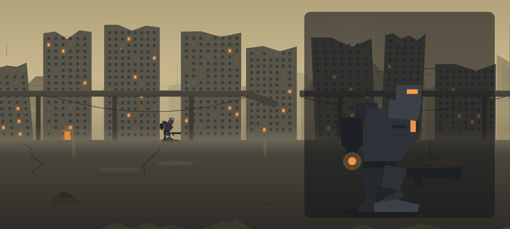
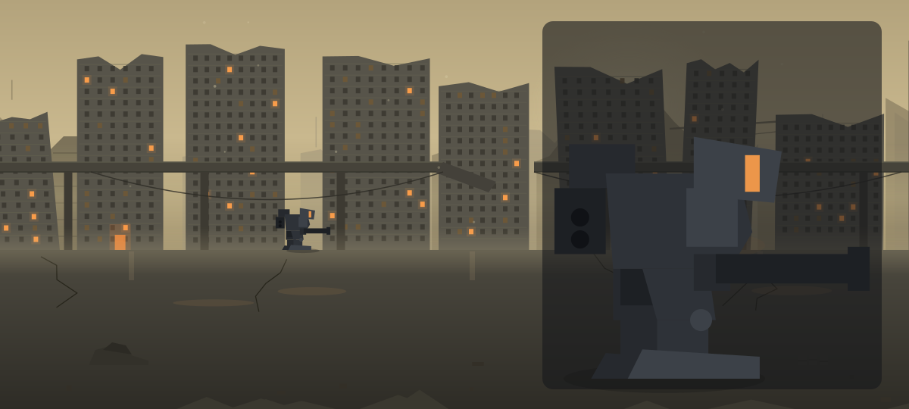
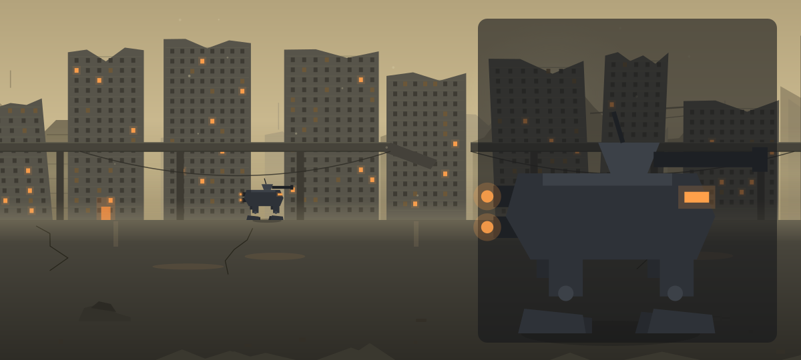

合成图 = 场景提案原画 + 画内游戏比例（玩家位 x=400、地面线 y=330）+ 右侧大号细节视图。侧视朝右、纯几何拼装、短粗比例写在骨架里；近侧肢体亮、远侧暗一档；强调橙与场景钠灯同源。候选按腿型区分：A 逆关节=速度 / B 重双足=火力 / C 四脚=炮台。

最瘦高的剪影：前倾楔形躯干 + 逆关节长掌，背部单喷口橙色尾焰；眼部条灯与场景钠灯同源。

宽厚剪影：超大肩甲盖住半身、头部下沉几乎不可见、柱状腿大平掌；肩甲一道橙条做识别。

最低最宽：六边形低车体 + 四脚 + 塔状长管，尾部双喷口；前缘整条发光眼带。